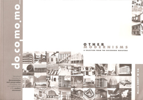
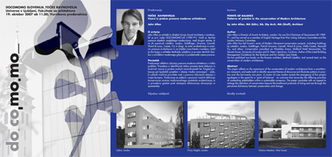
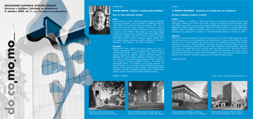
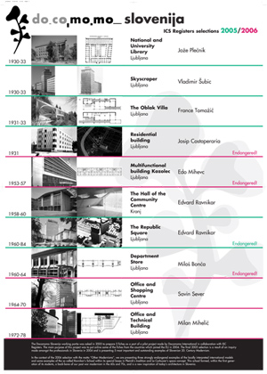
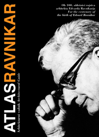
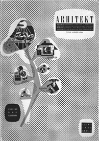

DOCOMOMO INTERNATIONAL: DOCOMOMO is an acronym for DOcumentation and COnservation of the MOdern MOvement. Docomomo International is an international not-for-profit organisation that documents and preserves architecture of the Modern Movement. It strives to raise awareness regarding Modernist architecture by running an international register, organising campaigns, conferences, exhibitions, education and publicity. It brings together experts from diverse professions: architects, art historians, conservationists, sociologists, urban planners, landscape architects and others involved in preservation. The organisation is composed of four specialised groups: Register, Technology, Urbanism and Landscape Architecture, and Education and Theory. It was founded by architects Hubert-Jan Henket and Wessel de Jonge from the Department of Architecture at the Eindhoven University of Technology in 1990. The Netherlands is also home to the present assembly centre of the Modernist architecture register in NAi. The two architects ran the organisation until 2002, when its seat was transferred to Paris, and the management taken over by Italian architect and professor Maristella Casciato. In 2010 the Docomomo International Headquarters moved first to Barcelona and then to Lisbon, where it was led by a Portuguese professor, Dr. Ana Tostoes, until 2020. From 2021 onwards the organization has been led by a German professor, Dr. Uta Pottgiesser, based at TU Delft in the Netherlands. Currently Docomomo International has 86 satellite units worldwide. www.docomomo.com
Docomomo Slovenia 2005-2010
The first contact with Docomomo International was made by art historian Stane Bernik in 1990; he was also the first coordinator for the Docomomo Slovenia working group. At the end of 2004, this coordination role was taken over by architect Nataša Koselj. In 2004, Docomomo Slovenia set out to reactivate the group domestically and internationally, and above all, to implement the priority goals described in the National Culture Programme.

{kind=link}

In 2004, the group organised a survey on the selection of Slovenian Modernist architecture. The survey was sent out to over 30 Slovenian experts in the field, and was answered by half of them. The results served for the international registration of the first five buildings categorised as Slovenian Modernist architecture. Slovenia became a full member of Docomomo International in 2005, when it met all membership requirements.
Picture 1: In a special issue of Docomomo Journal, March 2007, Docomomo Slovenia presented the first five buildings from its selection. Picture 2: In the March 2009 Docomomo Journal, Docomomo Slovenia presented, within the Built for Education theme, five educational buildings from its selection.


Nataša Koselj has also been an active member of the International Specialist Committee Docomomo ISC/Register since 2006. She was a guest researcher at the Docomomo International headquarters at t he Cité de l’Architecture et du Patrimonie in Palais de Chaillot, Paris. From 2008 to 2009, she coordinated the international project on education, linking 36 countries. The results were published in the Docomomo Journal in March 2009. She was among the first to introduce fourth-year students at the Faculty of Architecture in Ljubljana to the issue of preserving Slovenian Modernist architecture, following the methods recommended by Docomomo, through the Modern Slovenian Architecture course.
Between 2005 and 2009, Nataša Koselj worked on a number of projects at the Faculty of Architecture (as part of Docomomo Slovenia): 2005 – organisation of an international symposium with 16 lecturers and an excursion entitled Docomomo_Case Slovenia. The symposium, also attended by the then president of Docomomo International, Maristella Casciato, comprised four sections: Action, Preservation, Registration, Restoration. The first five Slovenian buildings to be registered internationally were introduced at the symposium, along with the first three successful restorations of Modernist architecture: Villa Prhavc, the administrative building of Kidričevo factory and Ljubljana Trade Fairground. In the same year, Stanko Kristl, one of the most important living architects of Slovenian post-war Modernism, gave a lecture, discussing his work with architecture students.
In 2006, an international symposium was held, entitled Docomomo_Restoration of Exposed Concrete, with the Danish architect and leader of Docomomo International’s Technology group, Ola Wedebrunn, as a guest lecturer. Altogether, 18 lecturers gave presentations at the symposium. Among the displayed examples of concrete restoration were Maximarket department store, the Jakopič Gallery, the Petrol gas station in Murska Sobota, a mortuary in Mengeš and the restoration of the Astra department store. Republic Square was also recommended for national monument status. In the same year, a public discussion was held at the Faculty of Architecture on the restoration of Kozolec, a multifunctional building by Edo Mihevc.
{kind=link}

In 2007, John Allan, an English architect and pioneer in the field of restoration of Modernist architecture and the first president of Docomomo UK, gave a lecture entitled “Docomomo_Points of Balance”; the lecture raised questions regarding the relationship between the stakeholder, the architect and the conservationist.

In 2008, Esa Laaksonen, the Finnish architect and director of the Alvar Aalto Foundation, gave a lecture entitled “Docomomo_The Brick and the Modern Movement”, discussing brick as a traditional material in Finnish Modernist architecture.
{kind=link}

In 2009, Claes Caldenby, the Swedish publicist, architect, professor at the Göteborg Faculty of Architecture and Docomomo Sweden coordinator, gave a lecture on Swedish post-war architecture entitled “Docomomo_A Twofold Movement”. The lecture was also attended by elders of Slovenian architecture Grega Košak and Vladimir Braco Mušič, who had attended the first lectures by Swedish experts at Ljubljana’s Faculty of Architecture in the 60s, entitled “Colour and Form”, which were organised by France Ivanšek.
Picture 5: In his lecture entitled “Points of Balance – Patterns of Practice in the Conservation of Modern Architecture”, John Allan offered reflections on the conservation of Modernist architecture from a practitioner’s viewpoint. He identified recurrent themes of discourse and concluded with an appeal to enlarge the definition of conservation beyond the traditional protocols of listing with a view to advancing beyond the perceived dichotomy between preservation and change. Picture 6: Esa Laaksonen’s lecture “The Brick and the Modern Movement” concentrated on post-war brick architecture in Finland, especially on the impact and meaning of the Finnish architect Alvar Aalto. Most of the featured works were included in the Docomomo Finland selection. Picture 7: Claes Caldenby’s lecture entitled “A Twofold Movement – Tendencies in Swedish Post-War Architecture” discussed two strands of development in Swedish post- war architecture, which the author described as “hard” and “soft” Enlightenment approaches. One side of this movement is the industrialisation and rationalisation of society with the help of science. The other side is a cultural change, one aspect of which is the relative autonomy of art.
{kind=link}

From 2005 on, Slovenia has annually registered (via fiches) at least five buildings per year representing Slovenian Modernist architecture in the Docomomo International Register, all of which were constructed between 1900 and 1980. This time distance of 30 years for registering a building as heritage is a common practice within Docomomo. The following Slovenian buildings have been registered to date: 2005: NUK (the National and University Library) by Jože Plečnik, Nebotičnik (the Skyscraper) by Vladimir Šubic, the Villa Oblak by France Tomažič, the OLO Municipality building by Edvard Ravnikar and Trg republike (Republic Square), also by Edvard Ravnikar.
2006: Šahovnica (the Chessboard block) by Josip Costaperaria, Kozolec (a multifunctional block) by Edo Mihevc, Astra (a department store) by Savin Sever, the retail centre in Šiška by Miloš Bonča and Klavir (the Piano, a telecommunications centre) by Milan Mihelič.
Picture 8: Selection 2005/2006; Docomomo Slovenia poster presentation at the Docomomo International Ankara conference in 2006.
Since 2007, registrations have been thematic. In 2007, when the theme was Education, Slovenia registered Bežigrad Grammar School by Emil Navinšek, the Faculty of Metallurgy by France Tomažič, Stražišče Primary School by Danilo Fürst, Mladi rod Kindergarten by Stanko Kristl, the Faculty of Civil and Geodetic Engineering by Edvard Ravnikar, and the Student Dormitory Cafeteria in Rožna Dolina by Ivan Štrukelj.
In 2008, the theme was Industry and Slovenia registered the Rog factory by Alojzij Král, the Litostroj factory by Edo Mihevc and Miroslav Gregorič, the Tomos factory by Miroslav Gregorič, the Kidričevo Industrial complex by Danilo Fürst and Josip Didek, and the Mladinska knjiga factory by Savin Sever.
In 2009, under the theme of “Power and the Modern Movement”, the Slovenian buildings registered were the National Assembly by Vinko Glanz, the State Administration Building by Stanko Rohrman, Šešek House by Gustav Trenz, Velenje town hall by Janez Trenz and Karl Hus, and the Sežana town hall by Skupina Kras.
{kind=link}

{kind=link}

For the centenary of Edvard Ravnikar’s birth, Nataša Koselj edited the first guide to Ravnikar’s Architecture, entitled Atlas Ravnikar. It was published by Docomomo Slovenia, in both Slovenian and English. From 2002 to 2008, Slovenian representatives attended all international Docomomo conferences and symposiums in Paris, New York, Ankara, Brno and Rotterdam. The group’s lectures and activity have been gathered in ab magazine throughout these years.
Pictures 9,10: At the centenary of the birth of Edvard Ravnikar in 2007, an architectural guide (Atlas Ravnikar) on Ravnikar’s architecture was published. Nataša Koselj has taken the silhouette of a tree by Ravnikar from the cover of the Arhitekt magazine from 1951 as the basis for the design of the Docomomo Slovenia graphical identity.
Slovenia (ZVKD), the Directorate for Cultural Heritage at the Ministry of Culture, Institute for Urban Planning RS, the Scientific Research Centre (ZRC) at the Slovenian Academy of Science and Arts, the Architect’s Society of Ljubljana (DAL), ab magazine, the Architecture and Design Museum (MAO), the Faculty of Architecture, and the Faculty of Arts, Ljubljana. Between 2005 and 2007, art historians Gojko Zupan and Metka Dolenc Šoba aided with event organisation. As a non-profit work group, Docomomo Slovenia operated within the Slovenian Conservationists Society until 2008; it now operates independently.